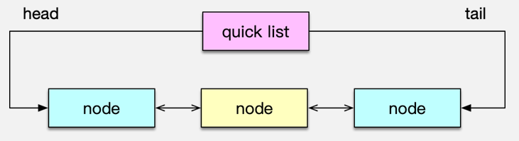

- 00 开篇寄语：缓存，你真的用对了吗？.md.html
- 01 业务数据访问性能太低怎么办？.md.html
- 02 如何根据业务来选择缓存模式和组件？.md.html
- 03 设计缓存架构时需要考量哪些因素？.md.html
- 04 缓存失效、穿透和雪崩问题怎么处理？.md.html
- 05 缓存数据不一致和并发竞争怎么处理？.md.html
- 06 Hot Key和Big Key引发的问题怎么应对？.md.html
- 07 MC为何是应用最广泛的缓存组件？.md.html
- 08 MC系统架构是如何布局的？.md.html
- 09 MC是如何使用多线程和状态机来处理请求命令的？.md.html
- 10 MC是怎么定位key的.md.html
- 11 MC如何淘汰冷key和失效key.md.html
- 12 为何MC能长期维持高性能读写？.md.html
- 13 如何完整学习MC协议及优化client访问？.md.html
- 14 大数据时代，MC如何应对新的常见问题？.md.html
- 15 如何深入理解、应用及扩展 Twemproxy？.md.html
- 16 常用的缓存组件Redis是如何运行的？.md.html
- 17 如何理解、选择并使用Redis的核心数据类型？.md.html
- 18 Redis协议的请求和响应有哪些“套路”可循？.md.html
- 19 Redis系统架构中各个处理模块是干什么的？.md.html
- 20 Redis如何处理文件事件和时间事件？.md.html
- 21 Redis读取请求数据后，如何进行协议解析和处理.md.html
- 22 怎么认识和应用Redis内部数据结构？.md.html
- 23 Redis是如何淘汰key的？.md.html
- 24 Redis崩溃后，如何进行数据恢复的？.md.html
- 25 Redis是如何处理容易超时的系统调用的？.md.html
- 26 如何大幅成倍提升Redis处理性能？.md.html
- 27 Redis是如何进行主从复制的？.md.html
- 28 如何构建一个高性能、易扩展的Redis集群？.md.html
- 29 从容应对亿级QPS访问，Redis还缺少什么？.md.html
- 30 面对海量数据，为什么无法设计出完美的分布式缓存体系？.md.html
- 31 如何设计足够可靠的分布式缓存体系，以满足大中型移动互联网系统的需要？.md.html
- 32 一个典型的分布式缓存系统是什么样的？.md.html
- 33 如何为秒杀系统设计缓存体系？.md.html
- 34 如何为海量计数场景设计缓存体系？.md.html
- 35 如何为社交feed场景设计缓存体系？.md.html
- 捐赠
17 如何理解、选择并使用Redis的核心数据类型？
你好，我是你的缓存课老师陈波，欢迎进入第 17 课时“Redis 数据类型”的学习。
Redis 数据类型
首先，来看一下 Redis 的核心数据类型。Redis 有 8 种核心数据类型，分别是 ：
- string 字符串类型；
- list 列表类型；
- set 集合类型；
- sorted set 有序集合类型；
- hash 类型；
- bitmap 位图类型；
- geo 地理位置类型；
- HyperLogLog 基数统计类型。
string 字符串
string 是 Redis 的最基本数据类型。可以把它理解为 Mc 中 key 对应的 value 类型。string 类型是二进制安全的，即 string 中可以包含任何数据。
Redis 中的普通 string 采用 raw encoding 即原始编码方式，该编码方式会动态扩容，并通过提前预分配冗余空间，来减少内存频繁分配的开销。
在字符串长度小于 1MB 时，按所需长度的 2 倍来分配，超过 1MB，则按照每次额外增加 1MB 的容量来预分配。
Redis 中的数字也存为 string 类型，但编码方式跟普通 string 不同，数字采用整型编码，字符串内容直接设为整数值的二进制字节序列。
在存储普通字符串，序列化对象，以及计数器等场景时，都可以使用 Redis 的字符串类型，字符串数据类型对应使用的指令包括 set、get、mset、incr、decr 等。
list 列表
Redis 的 list 列表，是一个快速双向链表，存储了一系列的 string 类型的字串值。list 中的元素按照插入顺序排列。插入元素的方式，可以通过 lpush 将一个或多个元素插入到列表的头部，也可以通过 rpush 将一个或多个元素插入到队列尾部，还可以通过 lset、linsert 将元素插入到指定位置或指定元素的前后。
list 列表的获取，可以通过 lpop、rpop 从对头或队尾弹出元素，如果队列为空，则返回 nil。还可以通过 Blpop、Brpop 从队头/队尾阻塞式弹出元素，如果 list 列表为空，没有元素可供弹出，则持续阻塞，直到有其他 client 插入新的元素。这里阻塞弹出元素，可以设置过期时间，避免无限期等待。最后，list 列表还可以通过 LrangeR 获取队列内指定范围内的所有元素。Redis 中，list 列表的偏移位置都是基于 0 的下标，即列表第一个元素的下标是 0，第二个是 1。偏移量也可以是负数，倒数第一个是 -1，倒数第二个是 -2，依次类推。

list 列表，对于常规的 pop、push 元素，性能很高，时间复杂度为 O(1)，因为是列表直接追加或弹出。但对于通过随机插入、随机删除，以及随机范围获取，需要轮询列表确定位置，性能就比较低下了。
feed timeline 存储时，由于 feed id 一般是递增的，可以直接存为 list，用户发表新 feed，就直接追加到队尾。另外消息队列、热门 feed 等业务场景，都可以使用 list 数据结构。
操作 list 列表时，可以用 lpush、lpop、rpush、rpop、lrange 来进行常规的队列进出及范围获取操作，在某些特殊场景下，也可以用 lset、linsert 进行随机插入操作，用 lrem 进行指定元素删除操作；最后，在消息列表的消费时，还可以用 Blpop、Brpop 进行阻塞式获取，从而在列表暂时没有元素时，可以安静的等待新元素的插入，而不需要额外持续的查询。
set 集合
set 是 string 类型的无序集合，set 中的元素是唯一的，即 set 中不会出现重复的元素。Redis 中的集合一般是通过 dict 哈希表实现的，所以插入、删除，以及查询元素，可以根据元素 hash 值直接定位，时间复杂度为 O(1)。
对 set 类型数据的操作，除了常规的添加、删除、查找元素外，还可以用以下指令对 set 进行操作。
- sismember 指令判断该 key 对应的 set 数据结构中，是否存在某个元素，如果存在返回 1，否则返回 0；
- sdiff 指令来对多个 set 集合执行差集；
- sinter 指令对多个集合执行交集；
- sunion 指令对多个集合执行并集；
- spop 指令弹出一个随机元素；
- srandmember 指令返回一个或多个随机元素。
set 集合的特点是查找、插入、删除特别高效，时间复杂度为 O(1)，所以在社交系统中，可以用于存储关注的好友列表，用来判断是否关注，还可以用来做好友推荐使用。另外，还可以利用 set 的唯一性，来对服务的来源业务、来源 IP 进行精确统计。
sorted set 有序集合
Redis 中的 sorted set 有序集合也称为 zset，有序集合同 set 集合类似，也是 string 类型元素的集合，且所有元素不允许重复。
但有序集合中，每个元素都会关联一个 double 类型的 score 分数值。有序集合通过这个 score 值进行由小到大的排序。有序集合中，元素不允许重复，但 score 分数值却允许重复。
有序集合除了常规的添加、删除、查找元素外，还可以通过以下指令对 sorted set 进行操作。
- zscan 指令：按顺序获取有序集合中的元素；
- zscore 指令：获取元素的 score 值；
- zrange指令：通过指定 score 返回指定 score 范围内的元素；
- 在某个元素的 score 值发生变更时，还可以通过 zincrby 指令对该元素的 score 值进行加减。
- 通过 zinterstore、zunionstore 指令对多个有序集合进行取交集和并集，然后将新的有序集合存到一个新的 key 中，如果有重复元素，重复元素的 score 进行相加，然后作为新集合中该元素的 score 值。
sorted set 有序集合的特点是：
- 所有元素按 score 排序，而且不重复；
- 查找、插入、删除非常高效，时间复杂度为 O(1)。
因此，可以用有序集合来统计排行榜，实时刷新榜单，还可以用来记录学生成绩，从而轻松获取某个成绩范围内的学生名单，还可以用来对系统统计增加权重值，从而在 dashboard 实时展示。
hash 哈希
Redis 中的哈希实际是 field 和 value 的一个映射表。
hash 数据结构的特点是在单个 key 对应的哈希结构内部，可以记录多个键值对，即 field 和 value 对，value 可以是任何字符串。而且这些键值对查询和修改很高效。
所以可以用 hash 来存储具有多个元素的复杂对象，然后分别修改或获取这些元素。hash 结构中的一些重要指令，包括：hmset、hmget、hexists、hgetall、hincrby 等。
- hmset 指令批量插入多个 field、value 映射；
- hmget 指令获取多个 field 对应的 value 值；
- hexists 指令判断某个 field 是否存在；
- 如果 field 对应的 value 是整数，还可以用 hincrby 来对该 value 进行修改。
bitmap 位图
Redis 中的 bitmap 位图是一串连续的二进制数字，底层实际是基于 string 进行封装存储的，按 bit 位进行指令操作的。bitmap 中每一 bit 位所在的位置就是 offset 偏移，可以用 setbit、bitfield 对 bitmap 中每个 bit 进行置 0 或置 1 操作，也可以用 bitcount 来统计 bitmap 中的被置 1 的 bit 数，还可以用 bitop 来对多个 bitmap 进行求与、或、异或等操作。

bitmap 位图的特点是按位设置、求与、求或等操作很高效，而且存储成本非常低，用来存对象标签属性的话，一个 bit 即可存一个标签。可以用 bitmap，存用户最近 N 天的登录情况，每天用 1 bit，登录则置 1。个性推荐在社交应用中非常重要，可以对新闻、feed 设置一系列标签，如军事、娱乐、视频、图片、文字等，用 bitmap 来存储这些标签，在对应标签 bit 位上置 1。对用户，也可以采用类似方式，记录用户的多种属性，并可以很方便的根据标签来进行多维度统计。bitmap 位图的重要指令包括：setbit、 getbit、bitcount、bitfield、 bitop、bitpos 等。
在移动社交时代，LBS 应用越来越多，比如微信、陌陌中附近的人，美团、大众点评中附近的美食、电影院，滴滴、优步中附近的专车等。要实现这些功能，就得使用地理位置信息进行搜索。地球的地理位置是使用二维的经纬度进行表示的，我们只要确定一个点的经纬度，就可以确认它在地球的位置。
Redis 在 3.2 版本之后增加了对 GEO 地理位置的处理功能。Redis 的 GEO 地理位置本质上是基于 sorted set 封装实现的。在存储分类 key 下的地理位置信息时，需要对该分类 key 构建一个 sorted set 作为内部存储结构，用于存储一系列位置点。
在存储某个位置点时，首先利用 Geohash 算法，将该位置二维的经纬度，映射编码成一维的 52 位整数值，将位置名称、经纬度编码 score 作为键值对，存储到分类 key 对应的 sorted set 中。
需要计算某个位置点 A 附近的人时，首先以指定位置 A 为中心点，以距离作为半径，算出 GEO 哈希 8 个方位的范围， 然后依次轮询方位范围内的所有位置点，只要这些位置点到中心位置 A 的距离在要求距离范围内，就是目标位置点。轮询完所有范围内的位置点后，重新排序即得到位置点 A 附近的所有目标。
- 使用 geoadd，将位置名称（如人、车辆、店名）与对应的地理位置信息添加到指定的位置分类 key 中；
- 使用 geopos 方便地查询某个名称所在的位置信息；
- 使用 georadius 获取指定位置附近，不超过指定距离的所有元素；
- 使用 geodist 来获取指定的两个位置之间的距离。
这样，是不是就可以实现，找到附近的餐厅，算出当前位置到对应餐厅的距离，这样的功能了？
Redis GEO 地理位置，利用 Geohash 将大量的二维经纬度转一维的整数值，这样可以方便的对地理位置进行查询、距离测量、范围搜索。但由于地理位置点非常多，一个地理分类 key 下可能会有大量元素，在 GEO 设计时，需要提前进行规划，避免单 key 过度膨胀。
Redis 的 GEO 地理位置数据结构，应用场景很多，比如查询某个地方的具体位置，查当前位置到目的地的距离，查附近的人、餐厅、电影院等。GEO 地理位置数据结构中，重要指令包括 geoadd、geopos、geodist、georadius、georadiusbymember 等。
hyperLogLog 基数统计
Redis 的 hyperLogLog 是用来做基数统计的数据类型，当输入巨大数量的元素做统计时，只需要很小的内存即可完成。HyperLogLog 不保存元数据，只记录待统计元素的估算数量，这个估算数量是一个带有 0.81% 标准差的近似值，在大多数业务场景，对海量数据，不足 1% 的误差是可以接受的。
Redis 的 HyperLogLog 在统计时，如果计数数量不大，采用稀疏矩阵存储，随着计数的增加，稀疏矩阵占用的空间也会逐渐增加，当超过阀值后，则改为稠密矩阵，稠密矩阵占用的空间是固定的，约为12KB字节。
通过 hyperLoglog 数据类型，你可以利用 pfadd 向基数统计中增加新的元素，可以用 pfcount 获得 hyperLogLog 结构中存储的近似基数数量，还可以用 hypermerge 将多个 hyperLogLog 合并为一个 hyperLogLog 结构，从而可以方便的获取合并后的基数数量。
hyperLogLog 的特点是统计过程不记录独立元素，占用内存非常少，非常适合统计海量数据。在大中型系统中，统计每日、每月的 UV 即独立访客数，或者统计海量用户搜索的独立词条数，都可以用 hyperLogLog 数据类型来进行处理。
© 2019 - 2023 Liangliang Lee. Powered by gin and hexo-theme-book.